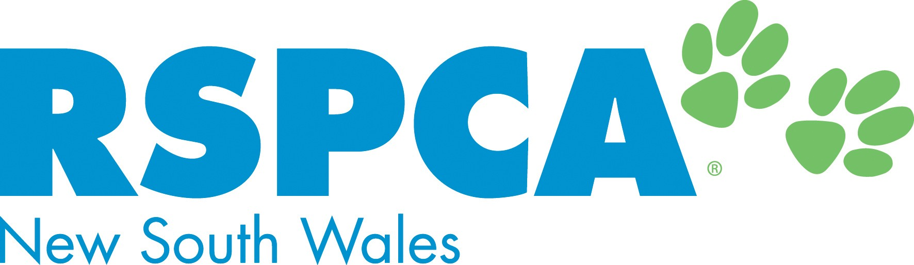

Introduction

1
- Learn about how you can become a volunteer for RSPCA NSW.
2
- Enter your contact details and upload your CV in order for RSPCA to get in touch with you.
3
- Choose the volunteer roles that are right for you, using location, interest/specialty, and time commitment.
4
- Sign up for (and subsequently complete) the inductions and in-person training required for the roles you're interested in.
5
- Show up for your first day of volunteering with RSPCA NSW!